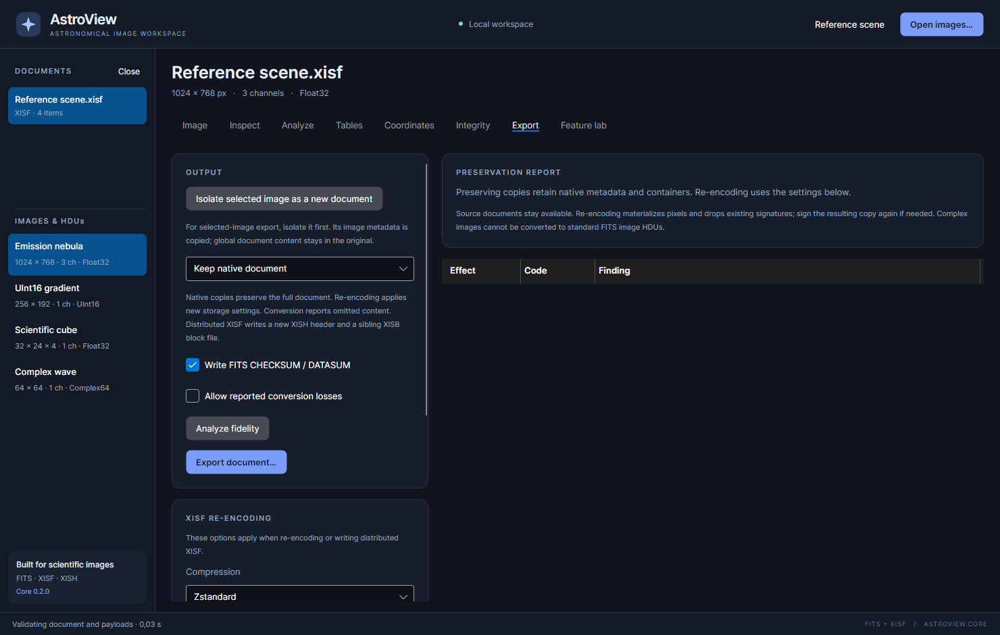

Export and conversion
The Export workspace saves scientific documents. Use Image → Export preview as PNG… for a rendered picture instead.

Choose an output operation
| Output choice | Use it for | What to review |
|---|---|---|
| Keep native document | Save the current native FITS/XISF document and its in-memory edits | Retains the native document model; does not apply new XISF compression settings |
| Re-encode as XISF | Write XISF with the chosen storage/compression settings; convert supported FITS content if needed | Materializes content; re-encoding and native preservation have different metadata/signature guarantees |
| Convert to FITS | Write a FITS document from supported XISF content, or write an already native FITS document | Review XISF-specific content that cannot be mapped |
| Distributed XISF (XISH + XISB) | Write a new header plus a sibling data-block file | Keep both files together; requires a new header filename |
The output applies to the whole selected document, not just the image you are looking at. To export a single image, use the isolation procedure below.
Save a native copy
- Finish any metadata/table/XML edits.
- Choose Keep native document.
- For FITS output, leave Write FITS CHECKSUM / DATASUM selected if you want new checksum cards generated.
- Click Export document….
- Choose a new filename and location.
- Reopen the output and inspect/validate the saved result.
AstroView guards the active source filenames against replacement. Use a new output path rather than trying to overwrite an open source. Native preservation does not promise that serialized file bytes or offsets are identical to the original; it preserves the supported native document content.
Convert with a fidelity review
- Select the required destination choice.
- Click Analyze fidelity.
- Read each Effect, Code and Finding in PRESERVATION REPORT.
- If omissions are listed, decide whether the resulting document is suitable for your work.
- Select Allow reported conversion losses only if you accept those omissions.
- Export to a new path, reopen it and validate/check expected content.
The default rejects reported losses. This protects properties, global metadata, tables, color/astrometry objects or extension content that the converter cannot represent. An allowed loss does not make an unsupported pixel conversion possible; complex images, for example, cannot be written as ordinary FITS image HDUs by this converter.
An empty report can mean no cross-format conversion is required. It does not make re-encoding equivalent to native preservation. Read the operation description and check signatures/advanced metadata as appropriate.
Re-encode XISF
Choose Re-encode as XISF, then scroll through XISF RE-ENCODING. These controls apply to XISF re-encoding and distributed output, not to a native copy or native FITS writer.
| Setting | Meaning |
|---|---|
| Compression | Uncompressed, zlib, LZ4, LZ4 high compression or Zstandard |
| Byte shuffle | Rearranges sample bytes for compression; reading restores them |
| Block digest | No digest, SHA-1, SHA-256, SHA-512, SHA3-256 or SHA3-512 |
| Block placement | Attached binary blocks, embedded text blocks or inline text blocks |
| Hex instead of Base64 | Changes the text encoding used for text blocks |
| Store strings as data blocks | Uses UTF-8 blocks for nonempty string properties |
| Alignment (bytes) | Padding/alignment for attached blocks; 1 disables alignment padding |
| Inline limit (bytes) | Threshold for text-encoded blocks; larger blocks can use attachments |
| Compression subblock bytes | Splits compression into independent subblocks; 0 disables splitting |
The desktop initially selects Zstandard, byte shuffle, SHA-256, attached blocks, 4096-byte alignment, a 65535-byte inline limit and no subblock splitting. These are application defaults, not mandatory settings for every XISF file.
The listed compression codecs are lossless for stored sample bytes; they do not turn a Float32 image into an 8-bit picture. File size and encoding speed depend on the actual data. Text encoding and alignment can add size even when a codec compresses the payload well. SHA-3 support depends on platform cryptography; if an algorithm is unavailable, select a supported digest such as the default SHA-256 and review the error rather than assuming it was substituted.
Re-encoding materializes image data and drops the previous signature. If a new signature is wanted, sign the output copy afterward. Some opaque content can still depend on source blocks, so keep source files available until saving finishes.
Export just one image
- Select the desired image.
- Click Isolate selected image as a new document.
- Select the newly created document in the sidebar.
- Inspect its metadata, then choose the output operation and export.
Image metadata is copied with the isolated image. Global document properties, document-level tables and other global content stay in the original document. Decide whether that is appropriate before using the isolated output as an archive of an observation.
Write a distributed document
Choose Distributed XISF (XISH + XISB) and a new .xish output name. The app
creates a uniquely named sibling block file and writes its reference in the
header. Keep both files together when moving or sharing the result.
This is a two-file operation rather than one atomic file replacement. The app cleans up its new partial outputs after a failure where possible. Reopen the header and validate it after saving. Sending the header alone is not sending the image pixels.